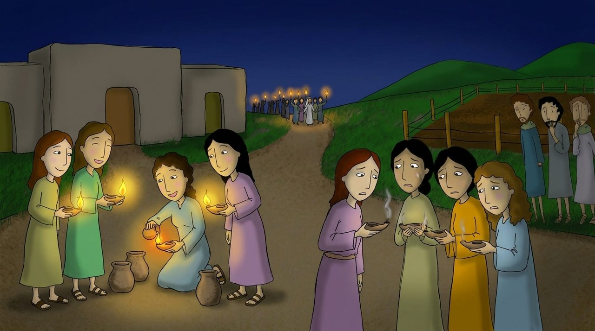
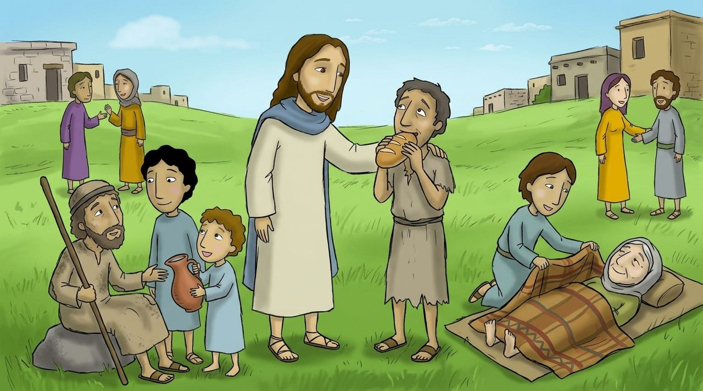
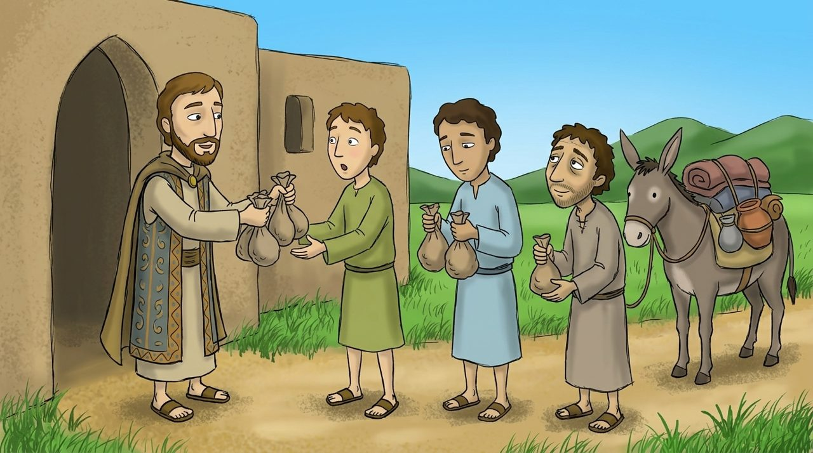
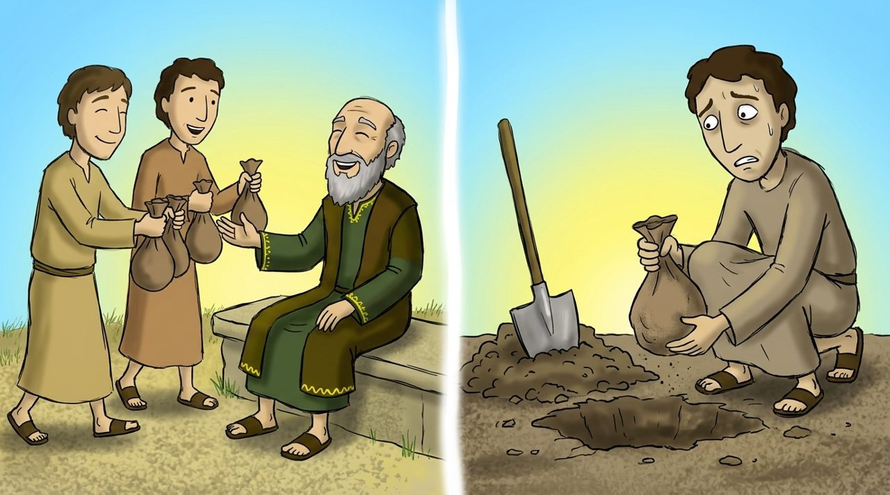

장면 1 · 25:1–13
열 처녀와 등불
열 명의 처녀가 을 들고 신랑을 기다렸어요. 다섯 명은 기름을 넉넉히 준비했고, 다섯 명은 준비하지 않았어요.
밤늦게 신랑이 왔을 때, 준비한 다섯 명은 잔치에 들어갔지만 기름을 사러 간 다섯 명은 들어가지 못했어요. 예수님을 기다리는 우리도 늘 준비해야 해요.

마태복음 25:1–46 · 약 40분
노란 낱말을 누르면 뜻이 나와요. 🔊 버튼을 누르면 읽어 줘요.

열 명의 처녀가 을 들고 신랑을 기다렸어요. 다섯 명은 기름을 넉넉히 준비했고, 다섯 명은 준비하지 않았어요.
밤늦게 신랑이 왔을 때, 준비한 다섯 명은 잔치에 들어갔지만 기름을 사러 간 다섯 명은 들어가지 못했어요. 예수님을 기다리는 우리도 늘 준비해야 해요.

어떤 주인이 여행을 떠나며 종들에게 를 맡겼어요. 한 사람에게는 다섯, 한 사람에게는 둘, 한 사람에게는 하나를 주었어요.
다섯 달란트와 두 달란트 받은 종은 열심히 장사해서 두 배로 늘렸어요. 그런데 한 달란트 받은 종은 땅을 파고 돈을 숨겨 두었어요.

주인이 돌아와서 열심히 일한 종들에게 말했어요. “잘하였도다, 착하고 된 종아! 네가 작은 일에 충성하였으니 큰 일을 맡기겠다.”
하지만 한 달란트를 숨긴 종은 “주인님이 무서워서 숨겼어요” 했어요. 주인은 맡긴 것을 쓰지 않은 게으른 종을 꾸짖었어요. 하나님이 주신 재능은 숨기지 말고 사용해야 해요.
예수님이 왕으로 오시는 날, 이렇게 말씀하실 거예요. “내가 배고플 때 먹을 것을 주었고, 목마를 때 마실 것을 주었고, 아플 때 돌봐 주었다.”
사람들이 “언제 그랬어요?” 묻자 왕이 대답하세요. “내 중에 지극히 작은 사람 하나에게 한 것이 곧 나에게 한 것이다.” 어려운 친구를 도우면 예수님을 돕는 거예요.
“너희가 여기 내 형제 중에 지극히 작은 자 하나에게 한 것이 곧 내게 한 것이니라.”
마태복음 25:40 · 어린이가 이해하기 쉬운 말로 옮김
너희가 여기 내 중에 지극히 자 하나에게 한 것이 곧 한 것이니라.
빠진 낱말을 순서대로 눌러 보세요.
배고픈 친구에게 빵을 나눠 주는 나를 그려 보세요. 그 곁에 예수님도 그려 보세요.
예수님, 저에게 재능과 시간을 맡겨 주셔서 감사합니다. 슬기로운 처녀처럼 늘 준비하고, 받은 달란트를 숨기지 않고 사용하게 해 주세요. 어려운 친구를 도울 때 예수님을 돕는 것임을 기억하게 해 주세요. 예수님 이름으로 기도합니다. 아멘.